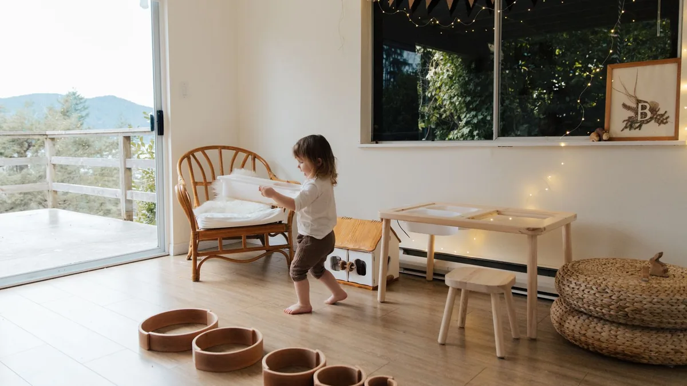
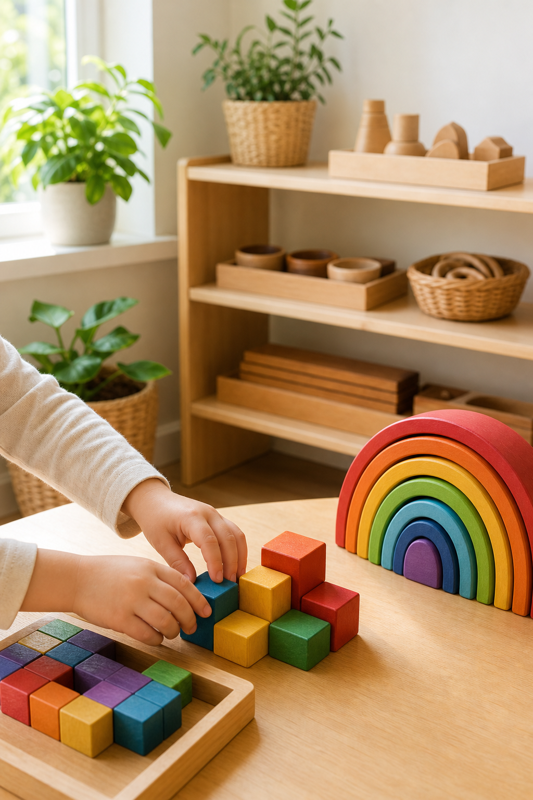
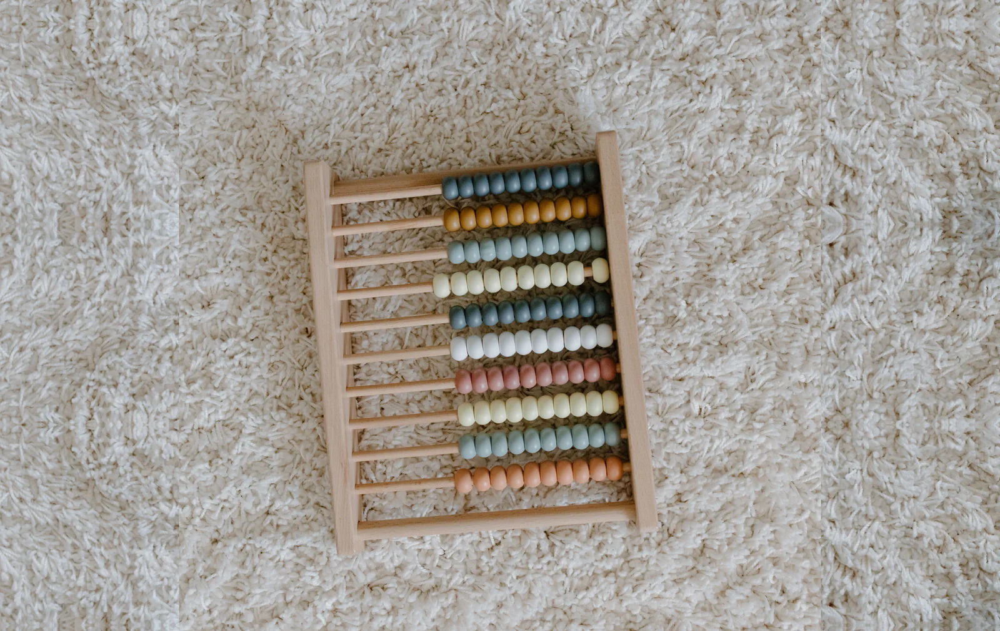
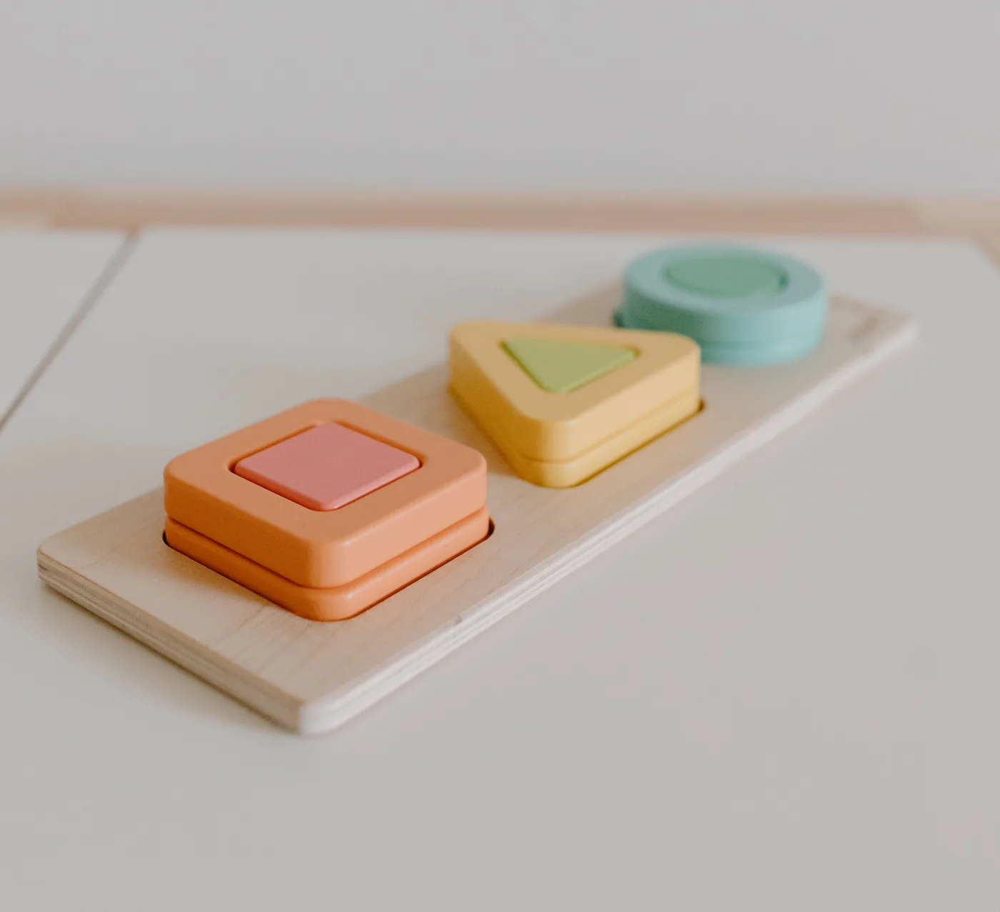
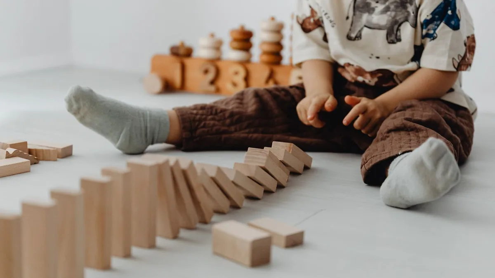
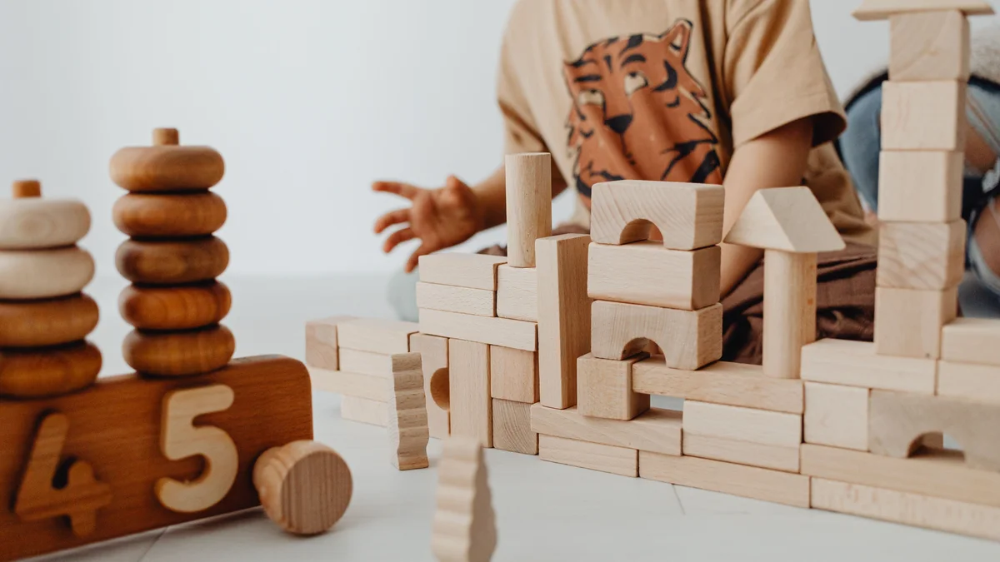

Descubre qué son los juguetes Montessori, cómo reconocer los que realmente siguen esta filosofía, cuáles son los más adecuados para cada edad y cómo elegir el mejor para acompañar el desarrollo de tu hijo.
Aprende a elegir un buen juguete Montessori.
Descubre qué juguetes son adecuados para cada edad.
Conoce qué habilidades desarrolla cada tipo de material.
Evita los errores más frecuentes antes de comprar.
El método Montessori es una filosofía educativa desarrollada por la doctora María Montessori a principios del siglo XX. Su idea principal es que los niños aprenden mejor cuando pueden explorar, experimentar y descubrir por sí mismos en un entorno preparado para ellos.
En lugar de dirigir constantemente el aprendizaje, el adulto acompaña y ofrece materiales adaptados a cada etapa del desarrollo. De esta forma, el niño gana autonomía, confianza y disfruta aprendiendo de manera natural.
Aunque hoy en día existen muchos juguetes etiquetados como "Montessori", el método va mucho más allá de un tipo concreto de juguete. Se basa en respetar el ritmo de cada niño, ofrecer experiencias adecuadas a su edad y favorecer que participe activamente en su propio aprendizaje.
En una frase
Montessori no consiste en que el niño juegue más, sino en que descubra más por sí mismo.
Los tres pilares del método Montessori
Aprendizaje activo
El niño no es un espectador. Manipula, experimenta y aprende haciendo.
Autonomía
Los materiales están pensados para que pueda realizar muchas actividades sin depender constantemente de un adulto.
Respeto por su ritmo
Cada niño evoluciona de forma diferente. Montessori propone adaptar el entorno y los materiales a ese momento concreto del desarrollo, sin prisas ni comparaciones.

Qué NO significa Montessori
Es habitual pensar que Montessori significa únicamente juguetes de madera o habitaciones minimalistas. En realidad, esos son solo algunos elementos que pueden formar parte de este enfoque.
Un juguete no es Montessori por el material con el que está fabricado ni por llevar esa palabra en la caja. Lo importante es cómo invita al niño a explorar, concentrarse y aprender.
Quédate con esta idea
No necesitas conocer toda la filosofía Montessori para elegir un buen juguete. Entender sus principios básicos ya te ayudará a tomar decisiones mucho más acertadas.
Ahora que sabes en qué consiste el método Montessori, el siguiente paso es comprender los principios que hacen diferente esta forma de aprender y por qué influyen tanto en la elección de los juguetes.
02 · Fundamentos
Principios del método Montessori
Antes de elegir un juguete Montessori, merece la pena entender qué hay detrás de esta filosofía. Muchas personas piensan que Montessori es una colección de juguetes concretos, cuando en realidad se trata de una forma de acompañar el aprendizaje del niño. Estos principios ayudan a distinguir un material realmente útil de otro que simplemente utiliza la palabra "Montessori" como reclamo comercial.

1
Aprender haciendo
Los niños aprenden mejor cuando participan activamente. En lugar de observar cómo un juguete hace cosas por sí solo, manipulan, prueban, se equivocan y descubren soluciones. Por eso, los materiales Montessori suelen invitar a tocar, encajar, clasificar, construir o experimentar.
2
Respetar el ritmo de cada niño
Cada niño tiene su propio proceso de desarrollo. Montessori propone ofrecer materiales adecuados al momento en el que se encuentra cada niño, evitando comparaciones y sin forzar aprendizajes para los que todavía no está preparado.
3
Favorecer la autonomía
Uno de los objetivos principales del método es que el niño pueda hacer por sí mismo aquello que ya está preparado para hacer, ganando confianza en sus propias capacidades.
4
Un objetivo claro
Muchos juguetes actuales intentan enseñar varias cosas a la vez. En Montessori, cada material suele centrarse en una habilidad concreta, lo que facilita la concentración y evita la sobreestimulación.
5
Un entorno preparado
El aprendizaje no depende solo del juguete. Un ambiente ordenado, con pocos materiales visibles y fácilmente accesibles, favorece que el niño pueda elegir, concentrarse y recoger de forma autónoma.
En resumen
Los juguetes Montessori no buscan impresionar con luces o sonidos. Su objetivo es ofrecer experiencias sencillas que permitan al niño aprender explorando a su propio ritmo.
03 · Antes de comprar
Cómo reconocer un buen juguete Montessori
La popularidad del método ha hecho que muchos productos utilicen la palabra "Montessori" en su nombre. Sin embargo, no todos siguen realmente sus principios. Antes de comprar, conviene fijarse en estas características.


Participación activa
El niño debe ser el protagonista. Un buen juguete Montessori invita a manipular, experimentar y descubrir.
Adaptado a su etapa
Debe suponer un pequeño reto, pero sin llegar a frustrar.
Favorece la concentración
Los materiales sencillos, con un objetivo claro y sin estímulos innecesarios, ayudan a mantener la atención durante más tiempo.
Calidad antes que cantidad
No es necesario tener muchos juguetes. Unos pocos materiales bien elegidos suelen ofrecer más oportunidades de aprendizaje.
Señales de alerta
Desconfía de un juguete si:
Promete desarrollar muchas habilidades a la vez.
Basa toda la experiencia en luces, sonidos o movimientos automáticos.
Utiliza la palabra "Montessori" como principal argumento de venta, pero no explica por qué.
No está adaptado a la edad o al nivel de desarrollo del niño.
Quédate con esta idea
No compres un juguete porque ponga "Montessori" en la caja. Elígelo porque realmente ayuda al niño a explorar, experimentar y aprender de forma autónoma.
Ahora que ya sabes identificar un buen juguete Montessori, el siguiente paso es aprender a elegir el más adecuado según la edad, los intereses y el momento de desarrollo de cada niño.
04 · Antes de comprar
Cómo elegir un juguete Montessori
Elegir un buen juguete Montessori no consiste en comprar el más caro ni el más popular. Lo importante es encontrar un material que se adapte al momento de desarrollo del niño y despierte su curiosidad. Si tienes dudas, este proceso puede ayudarte a tomar una buena decisión.
Edad
Intereses
Habilidad que queremos desarrollar
Juguete recomendado

1
Empieza por la edad
La edad recomendada es una buena referencia inicial, aunque nunca debe ser el único criterio. Dos niños de la misma edad pueden mostrar intereses y habilidades diferentes.
2
Observa sus intereses
¿Le gusta construir? ¿Prefiere clasificar objetos? ¿Disfruta con los puzles? ¿Le llaman la atención los animales? Cuando el juguete conecta con un interés real, es mucho más probable que lo utilice durante más tiempo.
3
Piensa qué habilidad quieres potenciar
Cada material ofrece oportunidades diferentes: motricidad, coordinación, lenguaje, concentración o autonomía. Elige según lo que quieras acompañar.
4
Menos es más
Es preferible disponer de pocos materiales bien seleccionados que de una gran cantidad de juguetes que apenas se utilizan. La rotación periódica ayuda a mantener el interés.
Qué habilidad quieres favorecer
Si quieres favorecer...
Puedes buscar...
Motricidad fina
Encajables, ensartables, pinzas
Coordinación
Torres, bloques, equilibrio
Concentración
Puzles sencillos
Autonomía
Material de vida práctica
Lenguaje
Letras de lija, tarjetas ilustradas
Desarrollo sensorial
Materiales con distintas texturas
Nuestro consejo
No busques el juguete perfecto. Busca el juguete adecuado para el momento que está viviendo tu hijo.
05 · Por edades
Juguetes Montessori según la edad
Cada etapa del desarrollo presenta intereses y necesidades diferentes. Elegir un juguete adaptado a ese momento facilita que el niño disfrute, experimente y aprenda con mayor naturalidad.
La edad es solo una orientación. Lo realmente importante es observar al niño y elegir materiales que respondan a sus intereses y a su momento de desarrollo.
Ahora que ya sabes qué juguetes suelen encajar mejor en cada etapa, vamos a conocer los principales tipos de materiales Montessori y qué aporta cada uno de ellos.
06 · Tipos de juguetes
Tipos de juguetes Montessori
Aunque existen muchos juguetes diferentes, la mayoría pueden agruparse según la habilidad que ayudan a desarrollar. Conocer estas categorías facilita mucho la elección.
Torres y apilables
Encajables y clasificadores
Material sensorial
Vida práctica
Letras y matemáticas
Juguetes sensoriales
Observación, percepción visual, tacto, discriminación de formas, colores y tamaños.
Observación, clasificación, curiosidad, conocimiento del medio.
Lupas infantiles
Figuras de animales
Colecciones de hojas
Piedras y elementos naturales
Nuestro consejo
No es necesario tener materiales de todas las categorías. Es preferible elegir unos pocos que respondan a los intereses del niño y que realmente vaya a utilizar.
07 · En casa
Cómo crear un espacio Montessori en casa
Uno de los principios del método Montessori consiste en preparar un entorno donde el niño pueda desenvolverse con autonomía. No hace falta hacer una reforma ni comprar muebles específicos: basta con adaptar el espacio a su altura y a su ritmo.
1. Un espacio adaptado al niño
La filosofía Montessori aplicada al hogar consiste en pensar el espacio desde la altura y las posibilidades del niño, no del adulto. Cuando el entorno favorece la libertad de movimiento, el orden y que el niño acceda por sí mismo a sus cosas, gana autonomía de forma natural, sin depender continuamente de un adulto.
Muebles a su altura
Cuando los materiales están al alcance del niño, puede elegirlos, utilizarlos y recogerlos sin depender continuamente de un adulto.
Pocos juguetes, bien organizados
Una selección reducida favorece la concentración y hace que el niño aproveche mejor cada material.
Cada cosa en su lugar
Las estanterías abiertas y las cestas ayudan a mantener el orden y facilitan que el niño aprenda a recoger después de jugar.
Rotación de materiales
Guardar algunos materiales y cambiarlos periódicamente ayuda a mantener el interés sin necesidad de comprar constantemente.
Un ambiente tranquilo
La iluminación natural, el orden y la ausencia de estímulos innecesarios favorecen un espacio relajado y fácil de disfrutar.
Quédate con esta idea
No necesitas una habitación Montessori perfecta. Lo realmente importante es crear un entorno donde el niño pueda explorar, elegir y aprender con autonomía.
2. Los elementos esenciales de un espacio Montessori
Además de organizar bien el espacio, hay algunos muebles que marcan una evolución natural en el entorno Montessori del niño, desde los primeros meses hasta que gana mayor autonomía. Estos son los cuatro más importantes.
Cama Montessori
Una cama Montessori es una cama baja, a la altura del suelo, que sustituye a la cuna cuando el niño empieza a tener más movilidad y quiere entrar y salir sin ayuda. El cambio suele producirse cuando ya gatea o camina con soltura, normalmente entre el primer y el segundo año. Al no tener barrotes ni depender de que un adulto lo coloque dentro, favorece la autonomía e independencia del niño a la hora de dormir y de levantarse por sí mismo.
Muchas familias buscan información sobre la "cuna Montessori", pero dentro del método el concepto más extendido es precisamente esta cama de suelo, pensada para favorecer la autonomía y la libertad de movimiento desde edades tempranas.
Un gimnasio Montessori es una estructura sencilla, normalmente de madera y tela, pensada para que el bebé se estimule y se mueva libremente desde los primeros meses sin depender de que un adulto lo entretenga. Se apoya en elementos simples que invitan a mirar, alcanzar y tocar, favoreciendo el desarrollo sensorial y motor sin sobreestimular, y suele usarse desde el nacimiento hasta que el bebé empieza a sentarse por sí mismo.
Conforme el niño crece, el gimnasio puede complementarse con elementos como la rampa Montessori o el triángulo Pikler, que ayudan a seguir desarrollando el equilibrio, la coordinación, la fuerza, la confianza y el movimiento libre.
Una torre de aprendizaje es una estructura elevada y segura que permite al niño alcanzar la altura de una encimera o un lavabo de adulto, con barandillas que evitan caídas. Se suele introducir cuando el niño camina con soltura y muestra interés por participar en tareas cotidianas, normalmente a partir del año y medio o los dos años.
Gracias a ella puede cocinar, lavarse las manos o preparar la mesa junto a un adulto, sintiéndose parte activa de la rutina familiar en lugar de un simple espectador.
Una mesa y silla Montessori son muebles a la altura del niño, pensados para que pueda sentarse, apoyarse y trabajar con comodidad sin depender de una trona o de una silla de adulto adaptada con cojines.
Al estar a su medida, favorecen la autonomía en actividades como dibujar, leer, comer, jugar o hacer manualidades, ya que el niño puede sentarse y levantarse por sí mismo. Suelen incorporarse a partir del año y medio, cuando empieza a pasar más tiempo sentado realizando actividades por su cuenta.
Además de estos muebles, algunos elementos ayudan a completar y organizar mejor el espacio Montessori: estanterías infantiles para tener los materiales a la vista y al alcance, cestas organizadoras para mantener el orden, espejos adaptados a su altura y percheros bajos para que el niño cuelgue su ropa sin ayuda. No es necesario tenerlos todos: funcionan como recomendaciones complementarias dentro del conjunto del espacio.
4. Menos es más
Por último, conviene recordar que un espacio Montessori no depende de la cantidad de muebles o materiales que tenga, sino de cómo está organizado. Acumular demasiados juguetes a la vez puede generar sobreestimulación y dificultar que el niño se concentre en uno solo. Es preferible mantener un entorno ordenado, con pocas opciones disponibles, e ir rotando los juguetes periódicamente para mantener su interés sin necesidad de comprar constantemente.
Ya conoces cómo preparar el entorno y qué elementos lo componen. Antes de comprar, conviene revisar cuáles son los errores más habituales para evitar decisiones impulsivas.
08 · Antes de comprar
Errores frecuentes al comprar juguetes Montessori
Elegir un juguete Montessori no tiene por qué ser complicado. Sin embargo, es fácil dejarse llevar por el marketing o por recomendaciones poco útiles. Estos son algunos de los errores más habituales y cómo evitarlos.
1
Pensar que todo lo de madera es Montessori
La madera es un material muy utilizado, pero no convierte automáticamente un juguete en Montessori. Lo importante es que tenga un propósito claro y sea adecuado para la etapa del niño.
2
Comprar un juguete para una edad superior
Un juguete demasiado complejo suele generar frustración y acaba olvidado. Es preferible elegir un material adaptado al momento actual del niño.
3
Tener demasiados juguetes
Un exceso de opciones puede dificultar la concentración. Es mejor ofrecer pocos materiales bien seleccionados y rotarlos periódicamente.
4
Buscar el juguete perfecto
No existe un único juguete ideal. Cada niño tiene intereses diferentes y un mismo material puede despertar mucho o poco interés según el caso.
5
Dejarse llevar por las modas
Antes de comprar, pregúntate si el juguete responde realmente a las necesidades de tu hijo o simplemente está de moda.
6
Fijarse solo en el precio
El juguete más caro no siempre es el mejor. Un material sencillo suele ofrecer más posibilidades de aprendizaje que otro mucho más complejo.
En resumen
Elegir bien suele consistir en observar al niño, conocer sus intereses y comprar menos, pero con más criterio.
09 · Recomendaciones
Productos Montessori recomendados
La filosofía de esta selección es siempre la misma: no recomendamos un producto porque sea popular, sino porque realmente aporta valor para una determinada etapa del desarrollo.

Cómo seleccionamos los productos
Para aparecer en esta guía valoramos aspectos como:
Calidad de fabricación
Adecuación a la filosofía Montessori
Relación calidad-precio
Facilidad de uso
Opiniones generales de las familias
Durabilidad
Interés que suele despertar en los niños
Nuestro compromiso
Si un producto deja de ser una buena recomendación o aparece una opción claramente superior, actualizaremos esta guía. Nuestro objetivo es ofrecer siempre una selección útil, equilibrada y basada en criterios de calidad.
Todavía no hay productos en esta categoría. Vuelve pronto.
10 · Dudas
Preguntas frecuentes
¿Qué es un juguete Montessori?
Es un juguete o material diseñado para favorecer que el niño aprenda explorando, manipulando y descubriendo por sí mismo, respetando su etapa de desarrollo y fomentando su autonomía.
¿Todos los juguetes de madera son Montessori?
No. Aunque la madera es un material muy habitual, lo que realmente define un juguete Montessori es su diseño, su finalidad y la forma en la que invita al niño a aprender.
¿A partir de qué edad pueden utilizarse?
Existen materiales adaptados desde los primeros meses de vida. Lo importante no es únicamente la edad recomendada por el fabricante, sino que el juguete responda al momento de desarrollo y a los intereses del niño.
No. Existen muchos juguetes inspirados en la filosofía Montessori que ofrecen una excelente experiencia de aprendizaje sin pertenecer a ninguna marca oficial. Lo importante es valorar el diseño, la calidad y el uso que permitirá al niño.
¿Los juguetes Montessori sustituyen al resto de juguetes?
No. Pueden convivir perfectamente con juegos simbólicos, construcciones, puzles, libros y otros materiales educativos. El objetivo no es limitar el juego, sino ofrecer propuestas que favorezcan el aprendizaje activo.
¿Son siempre más caros?
No necesariamente. Hay materiales Montessori para prácticamente todos los presupuestos. En muchas ocasiones es preferible comprar menos juguetes, pero de mayor calidad y con más posibilidades de uso.
¿Cómo sé si he elegido bien?
Un buen juguete Montessori despierta la curiosidad, invita a participar activamente, está adaptado a la etapa de desarrollo, permite repetir la actividad muchas veces y favorece la concentración y la autonomía. Si cumple estos principios, probablemente has hecho una buena elección.
11 · Para terminar
Conclusión
Elegir un juguete Montessori no consiste en seguir una moda ni en llenar la habitación de materiales. Se trata de ofrecer al niño oportunidades para explorar, descubrir y aprender de forma natural.
No existe un único juguete perfecto. El mejor será siempre aquel que responda a sus intereses, a su etapa de desarrollo y le permita disfrutar mientras adquiere nuevas habilidades.
Esperamos que esta guía te haya ayudado a comprender mejor la filosofía Montessori y que ahora te resulte mucho más sencillo elegir el juguete adecuado para cada momento.
Ideas clave
Montessori es una filosofía educativa, no una marca.
El mejor juguete depende del momento de desarrollo del niño.
Menos juguetes, pero mejor elegidos.
La autonomía es más importante que el entretenimiento.
Un entorno preparado puede influir tanto como el propio juguete.
Sigue descubriendo ideas para regalar
Si esta guía te ha resultado útil, explora otras categorías y encuentra juguetes adaptados a cada etapa del desarrollo infantil, organizados por edades.